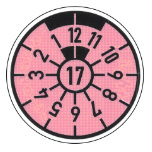

| Vorgeschriebene Abmessungen der Prüfplakette: | |
| Durchmesser | 35 mm |
| Schrifthöhe der Ziffern bei den Monatszahlen | 4 mm |
| Schrifthöhe der Ziffern bei der Jahreszahl | 5 mm |
| Höhe des ebenen Strichs über und unter den | |
| Zahlen 1 bis 12 | 3 mm |
| Strichdicke | 0,7 mm |
Ergänzungsbestimmungen
| 1. | Die Prüfplakette muss so beschaffen sein, dass sie für die Dauer ihrer Gültigkeit den Beanspruchungen beim Betrieb des Fahrzeugs standhält. Die Beschriftung der Prüfplakette – ausgenommen die Umrandung sowie die schwarzen Felder des Abschnitts zwischen den Zahlen 11 bis 1 – muss nach ihrer Anbringung mindestens 0,10 mm erhaben sein; sie ist nach dem Schriftmuster der Normschrift DIN 1451 in Schwarz auf farbigem Grund auszuführen. Die Farbe des Untergrunds ist nach dem Kalenderjahr zu bestimmen, in dem das Fahrzeug zur nächsten Hauptuntersuchung vorgeführt werden muss (Durchführungsjahr). Sie ist für das Durchführungsjahr
Die Farben wiederholen sich für die folgenden Durchführungsjahre jeweils in dieser Reihenfolge. Die Farbtöne der Beschriftung und des Untergrunds sind dem Farbregister RAL 840 HR, herausgegeben vom RAL Deutsches Institut für Gütesicherung und Kennzeichnung e.V., Siegburger Straße 39, 53757 St. Augustin, zu entnehmen, und zwar ist als Farbton zu wählen für
|
||||||||||||||||||||||||||
2. |
Die Jahreszahl wird durch die letzten beiden Ziffern des Durchführungsjahres im Mittelkreis angegeben; sie ist in Engschrift auszuführen. |
||||||||||||||||||||||||||
| 3. | Die einstelligen Monatszahlen am Rand der Prüfplakette sind in Mittelschrift, die zweistelligen in Engschrift auszuführen. | ||||||||||||||||||||||||||
| 4. | Das Plakettenfeld muss in zwölf gleiche Teile (Zahlen 1 bis 12 entgegen dem Uhrzeigersinn dargestellt) geteilt sein. Der Abschnitt (60°) ist durch die Zahlen 11, 12 und 1 unterbrochen. Die oberste Zahl bezeichnet den Durchführungsmonat des Jahres, dessen letzten beiden Ziffern sich im Mittelkreis befinden. | ||||||||||||||||||||||||||
| 5. | (weggefallen) |